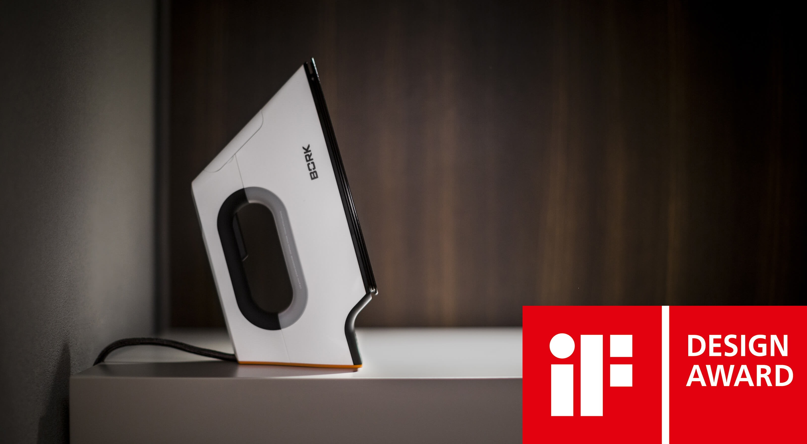
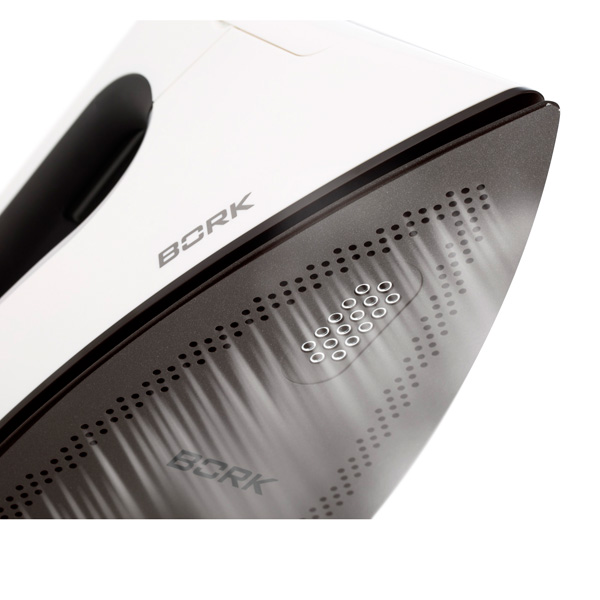
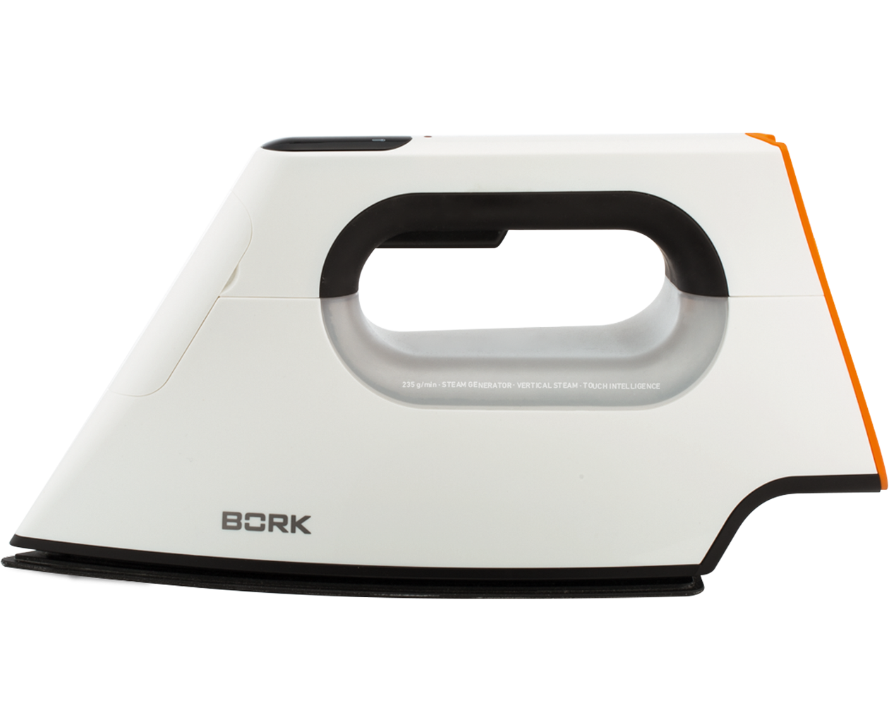
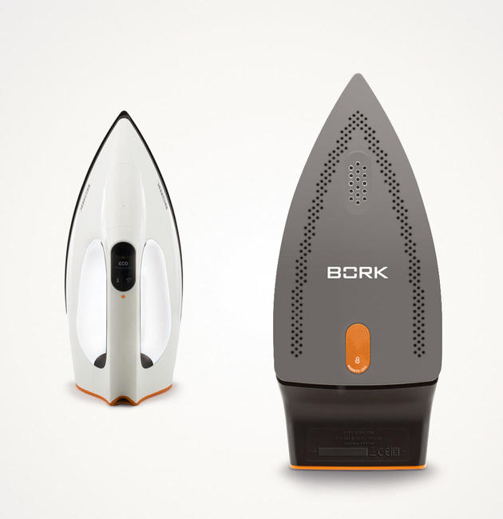
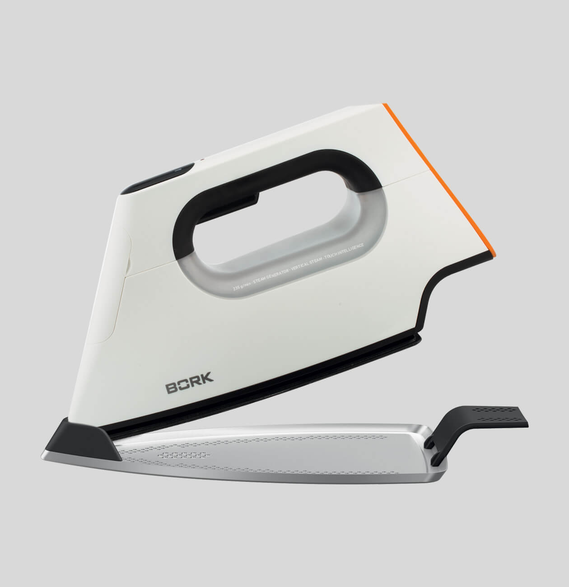
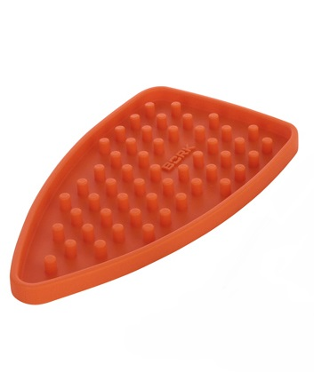
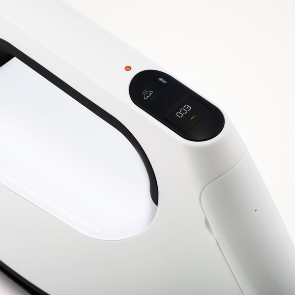
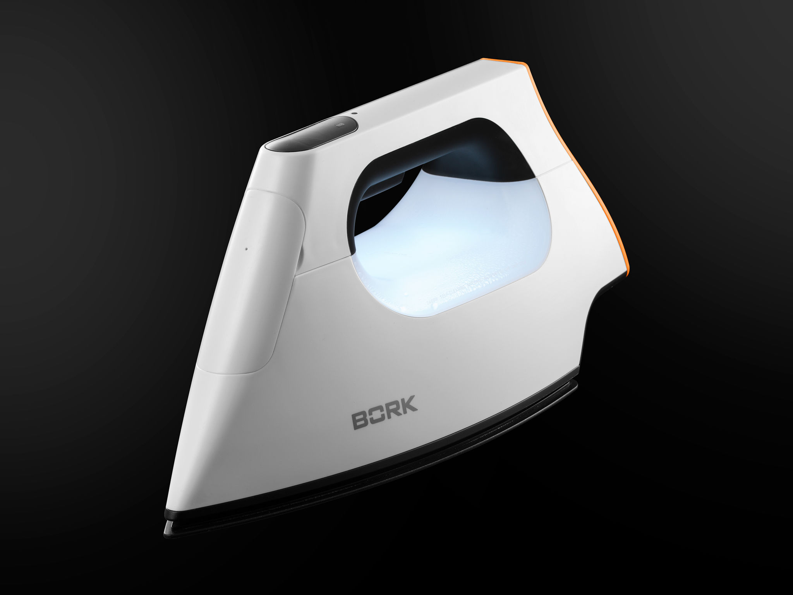
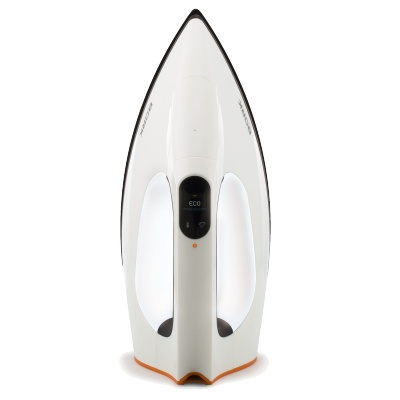

Утюг bork I780
Ультрасовременная модель со встроенным парогенератором. Утюг BORK I780 удостоен престижной награды IF DESIGN AWARD!
Мощное парообразование
Утюг BORK I780 со встроенным парогенератором позволяет гладить деликатные вещи с постоянной подачей пара даже при минимальных температурах подошвы. Сверхкомпактная помпа нового поколения гарантирует идеальное проглаживание даже пересушенных тканей, что выгодно отличает его от традиционных утюгов. Просто в процессе глажки нажмите на курок, и утюг выдаст максимальное количество пара для устранения замятий.
Система контроля парообразования TOUCH INTELLIGENT
Утюг i780 автоматически прекращает подачу пара при нахождении в неподвижном состоянии и при отсутствии контакта с ручкой.
Быстрый нагрев
Утюг I780 с мощностью 2600 Вт, осуществляет быстрый нагрев до заданного значения. Материал подошвы, сплав алюминия и магния – это лучшее решение благодаря, которому подошва утюга очень легкая и быстро нагревается.
Сверхпрочное покрытие
Анодированное покрытие - ANODIUM , обеспечивает идеальное скольжение. Во время глажения изделий ткань не сборит, не образуются замятия. При контакте с металлической фурнитурой, подошва не царапается.
Насадка для деликатных тканей
Насадка крепится на магните, что позволяет легко крепить ее на утюг и в то же время она очень крепко держится. Легким движением руки, насадка надевается и снимается с подошвы. Насадка дает 100% уверенность в том, что Вы не оставите следов на ткани. Если вы гладите на высокой температуре подошвы хлопок или джинсы и Вам требуется моментально понизить температуру, чтобы прогладить шерсть или шёлк, прилагаемая насадка идеально справится с этим! Вы не тратите время дожидаясь пока подошва остынет и никогда не увидите лоска на белье.
Силиконовая подставка
Теперь вы сможете хранить утюг в любом месте, не переживая, что он повредит поверхность или упадёт на пол, так как горизонтальное хранение является более устойчивым. Силиконовая подставка, выдерживает температуру 400°С.
Высококонтрастный LCD дисплей и сенсорное управление
Впервые в утюге применен информативный дисплей с отображением типа ткани. Сенсорный тип управления позволит в одно касание выбрать тип ткани и отрегулировать подачу пара. Инновационный LCD дисплей предоставляет возможность выбрать русский/английский язык или использовать символьное управление. По умолчанию установлен русский язык, выбор других режимов происходит удерживанием в течение 4 секунд, сенсора выбора уровня подачи пара и сенсора выбора температурного режима.
Подсветка
Элегантная подсветка служит не только индикатором работы но и показывает уровень воды в резервуаре утюга.
Система безопасности и автодиагностика
Система автоматического отключения активируется, если утюг остается неподвижным 30 секунд в горизонтальном или боковом положении и 8 минут — в вертикальном положении. При окончании воды, утюг перейдёт в режим без пара, через 60 сек.. При этом подсветка будет моргать.
- Е2 Перегрев Необходимо, чтобы подошва утюга остыла
- E0/E1/E3 Ошибка в работе устройства (Необходимо обратиться в авторизованный сервисный центр компании BORK)
Самоочистка без вашего участия
Функция автоматической очистки осуществляет удаление известковых отложений, накопленных в резервуаре утюга.
- Используйте эту функцию один раз в 2–3 недели, либо при появлении частиц на поверхности подошвы утюга.
- Заполните резервуар для воды с помощью емкости для залива воды, не превышая максимального уровня.
- Нажмите и удерживайте сенсор выбора температурного режима около 4 секунд. На дисплее появится сообщение ЧИСТКА. Функция автоматической очистки будет запущена.
- Разместите утюг над большой емкостью в горизонтальном положении. Через подошву утюга будут интенсивно выходить пар и жидкость. Система очистки длится около 1 минуты.
Технические характеристики
Мощность 2200-2600 Вт
Подача пара до 60г/мин
Паровой удар 235 г/мин
Емкость для воды 330 мл
Длина кабеля 2.5 м
Вес 1.76 кг
Срок гарантии 1 год
Страна производства Китай